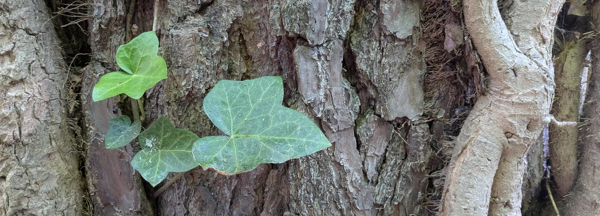
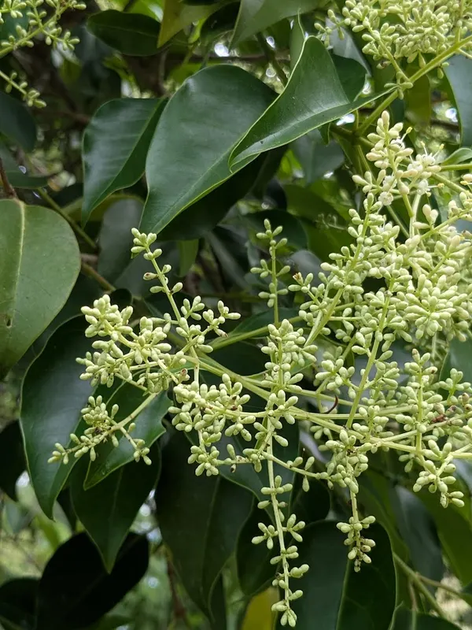
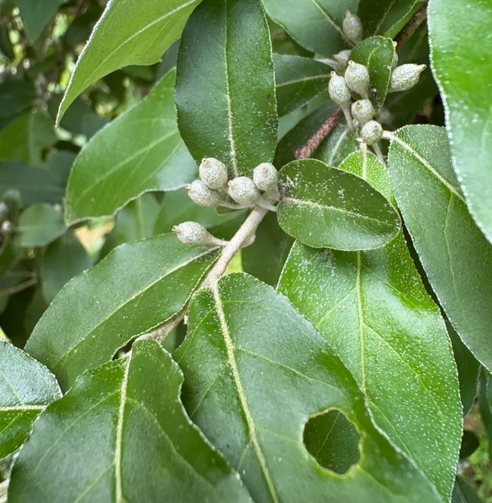
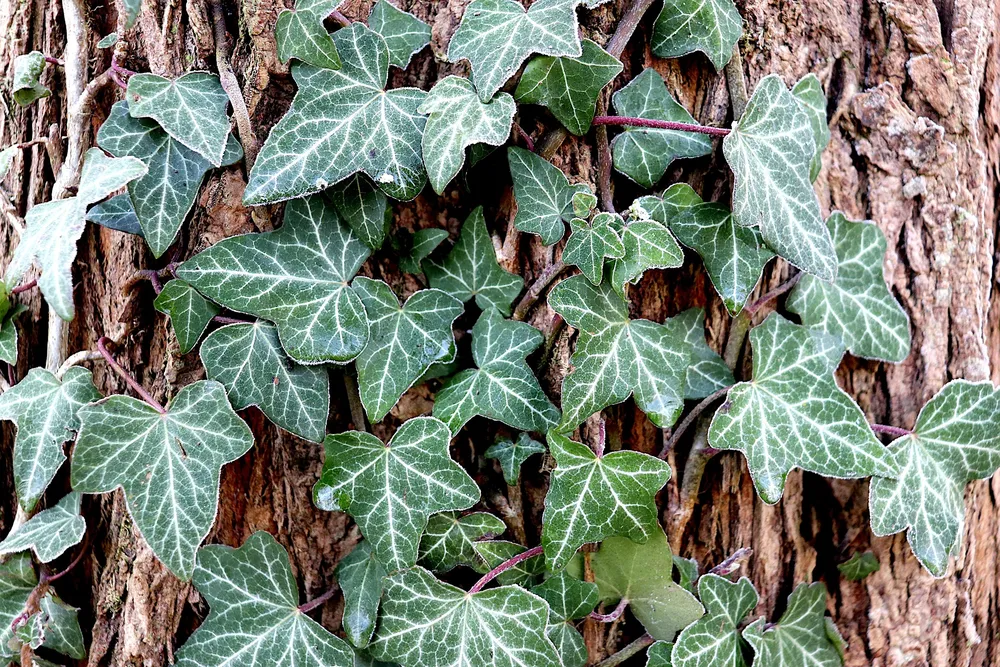
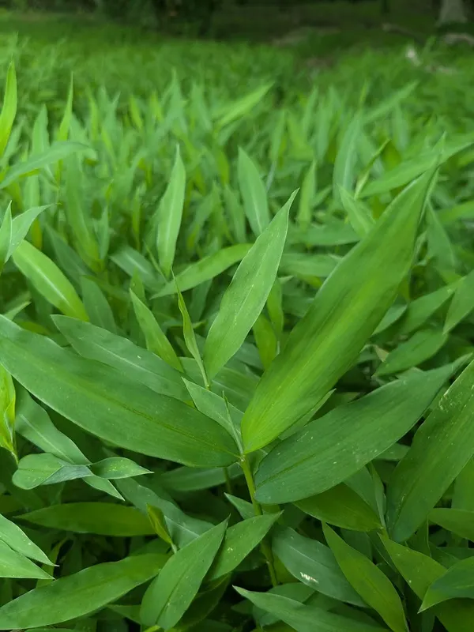
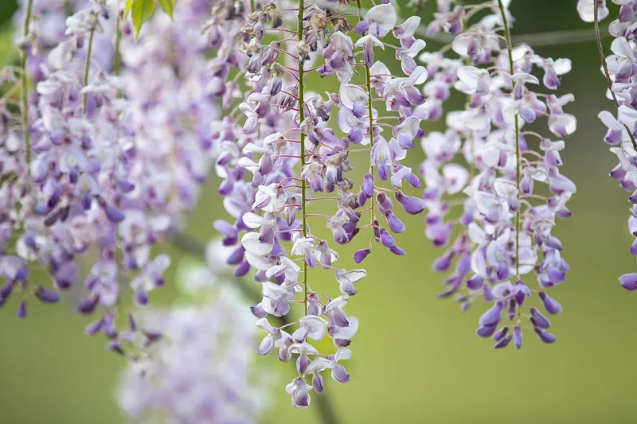
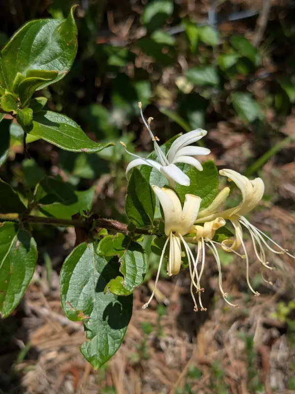

Past Experience
Invasive Plant Control
Invasive plants can quietly take over a yard. Matthew used different techniques for different invaders — chosen by species and time of year — to clear infested areas and give native plants room to recover. This kind of work always needs follow-up, but the results are worth it.

What makes a plant "invasive"?
Invasive exotic pest plants are species brought here from other regions. Back home, climate, animals, and disease kept them in check. Here, without those limits, they grow aggressively and choke out the native plants that evolved alongside our local wildlife.
Common culprits in the Piedmont

Chinese Privet
A dense, fast-growing shrub that invades forests and forms impenetrable thickets, crowding out native plants.

Elaeagnus
A vigorous, silvery-leaved spreader that overtakes natural areas and outcompetes native vegetation.

English Ivy
Climbs and smothers trees, blocking light and damaging bark until whole trees decline.

Japanese Stiltgrass
Spreads fast into dense mats, crowding out native plants and disrupting forest regeneration.

Wisteria
An aggressive vine heavy enough to pull down whole trees; controlled by careful cutting and targeted treatment.

Japanese Honeysuckle
A familiar vine that quickly blankets shrubs and young trees, shading out everything beneath it.
Done responsibly
Invasive control was carried out under a North Carolina pesticide license, using the most effective and least disruptive method for each plant — with the follow-up needed to keep a cleared area from slipping back.
NCDA & CS License No. 026-18284